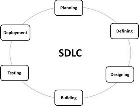
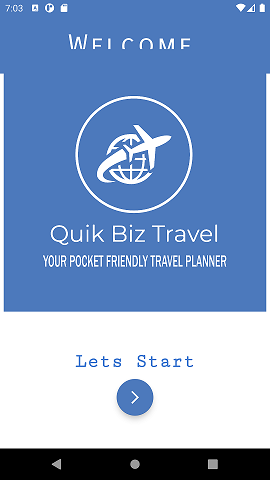
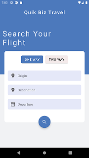
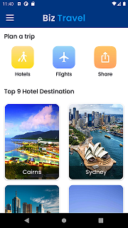
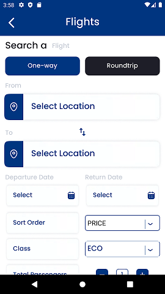
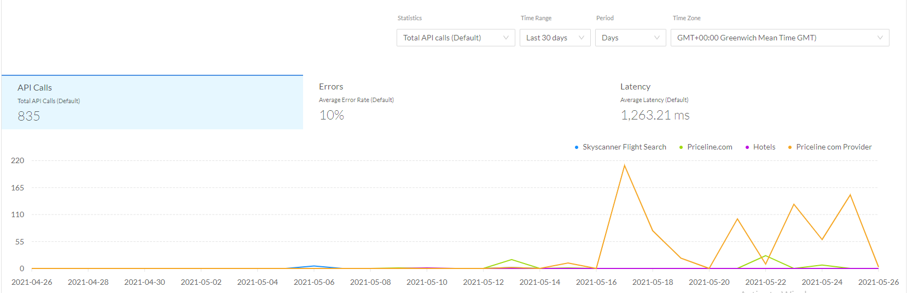

Mark was born in Sydney of Italian background, upon completion of his HSC in Griffith in 2015,
He is currently employed as a Health Information Officer at a private hospital in Melbourne.
Mark has always enjoyed IT. From playing computer games on his parents TV,
to selecting as many IT electives at High School.
Being from a fairly tech-savvy family also contributed to this interest.
Mark began a Diploma of IT after High School, and asked what was his main area of IT interest, he said:
“...network security and programming AI, especially for robots.”
Mark further added that these are the main areas he wishes to concentrate on during his studies.
“...careers in these fields are what I aspire to achieve.”
His hobbies include gaming, ball sports (particularly Rugby and Soccer), Music (Rock and Metal) and fixing cars.
Max, who lives in Cairns North Queensland, is a 25 year old student of RMIT.
He has previously studied a diploma at CQU and worked in the ADF.
His interest in IT started because of his father, who was an IT consultant working from home.
Hence Max was always surrounded by computers and servers.
Knowledge and interest in IT was accelerated during work in the ADF.
“… every second week there was something new;... radios, GPS, commanders tablets,
tracking and positioning gadgets, bore-sight tools were becoming more common place,
everything was starting to become more ‘digital.’”
After the Army, Max decided to study IT. He was drawn towards Information security and started some online courses,
such as Comtia Network and linux+ offered at sites such as Cybrary.it, EdX
and Udemy
With these courses Max started to become more interested in programming,
and started taking some courses in learning how to code using CodeAcademy.
“RMIT has a lot more programming on offer. In particular linux and C++ … [and these] were good selling points…
but I also hope to improve my GUI and graphical design...”
Zac is Australian who completed his VCE in 2018.
He then commenced an electrical apprenticeship.
This was not to his liking so now he is pursuing a career in IT.
Zac is very sports minded playing AFL, cricket and basketball.
Highlights include playing basketball in America against high schools, and playing AFL at the MCG and Marvel
stadium. He also enjoys video games with friends.
Zac’s interest in IT started in primary school when he received a DS console.
Since then he has kept up to date with the latest gaming technology.
His interest in IT today is very broad. Besides gaming, he likes learning about automation,
especially home networks. He also enjoys watching various “you-tubers” talk about technology.
But his biggest interest is centred on Tesla and Elon Musk.
The technology side of car automation and renewable energy.
One day Zac hopes to start his own business with the knowledge he gains from the RMIT IT course.
As Zac has said he specifically wishes to:
“...teach the fundamentals and basics that I have learnt to another person to make their life easier
with technology.”
Besides English, Lucky is fluent in Cebuano and Tagalog (both languages from the Philippines).
Ever since Lucky was young he’s had a passion for helping people in need.
This is exemplified by his choice of Nursing as a career, which he studied at RMIT.
He also has a liking for IT Technologies. These two can be married together.
As Lucky said:
“I have seen and used a variety of technology that assist humans[making]
manual task[s] easier”
His hobbies include playing computer games particularly: RPG, MMORPG, FPS games
Lewis was born in England and emigrated to Australia at age 11.
At High School he shone in science subjects especially Mathematics,
whilst outside the classroom he represented the school in soccer and chess.
Studying accountancy at night, in 1979 he became a member of what is now known as the
Institute of Public Accountants.
The following year he started an undergraduate Mathematics degree at Flinders University.
Whilst working as an accountant, Lewis was exposed to computer programming and from then on programming became somewhat of a passion.
This passion became the driver to enrol in the RMIT IT Degree.
Asked what it is about computer programming he likes, he stated:
“… personal satisfaction. It gives me immense joy when presented with a
programming problem and I ‘nut’ it out, and make things work.”
Other than family, his biggest love is his home town football club: Swindon Town Football Club (Nicknamed
‘The Robins’ because of their red shirts).
Lewis has been married for over 40 years and has one child.
More Information on Lewis
Peter Hodgkinson
Peter is an Australian Citizen, born and raised in Brisbane, Qld, in a family of ten children.
His grandparents came from Wales, England & Ireland. He completed Secondary School in Brisbane,
but has not as yet completed any tertiary studies.
Peter leaned to fly light aircraft many years ago and had dreams of becoming a Qantas 747 Pilot like his Brother,
however his life took a different path and he spent many years working in Sales/Account Management & Marketing
for various industries, including Hospitality, Building & Construction and Information Technology.
Peter has been interested in IT ever since he was young boy, watching cartoons, such as “The Jetsons” and
“Dick Tracy”, which forecast technology (ie Dick Tracy’s watch – video calls).
Peter was involved in the Marketing of Cable TV, Chromecast and encryption Services etc.
But in 2019 he decided to become more involved in the technical aspects of the products.
This lead to study of IT at RMIT. He also believes these studies:
“...will be able to further enhance my skills in Time Management, Problem Solving,
Teamwork and Conflict Resolution.”
Peter’s main hobbies are keeping fit and Singing in a band, which he enjoy immensely.
Team “Quik Biz” has kept the same communication process going for Assignment 3 as we did for Assignment 2.
We believe this to be the most efficiency process. Our groups primary technique for communicating was our
scheduled biweekly meetings hosted in Microsoft Teams (MT).
During the first meeting of our group back in Assignment 2, all the team members agreed we would have at
least two meetings per week, usually on a Monday and Thursday. Of all the meetings in both Assignment 2 and 3
there have only been 2 apologies, which is a sign of our positive commitment to the project and our processes.
Whilst there have been informal communication between team members this has always been conducted within MT,
and this correspondence is freely viewable to all team members. MT streamlined the communication process.
Written work was also shared within the MT platform. This work was then uploaded into GitHub or incorporated
into the PDF file(s) in the appropriate format. Assembling the teams written work into this one central
location allowed all team members to communicate their concerns/comments.
The above processes also allowed our group leader, Lewis, to more easily delegate tasks between the group.
This made his leadership role much more time efficient. We discussed our strengths and weaknesses in our
meetings and made sure everyone was comfortable with the tasks they were asked to do.
Career Plans
Desire! That's the one secret of every man's career. Not education.
Not being born with hidden talents. Desire." (Carson nd) [Source]
Ideal Job
Quik Biz team members have not changed their ideal jobs from Assignment 2,
which in turn had not changed from Assignment 1.
Team members preferred (ideal) job are:
Team Member
Job Title
Job Characteristics
Lewis Dean
SQL Analyst Programmer
May be a ‘contract ‘employee for a fixed time, but more likely be a normal Employer /
Employee relationship. Fixed office location with minimal customer contact.
Mark Parisotto
Penetration Tester (System Assurance)
Self Employed. Will be a sub-contractor to whoever needs systems checking/vetting.
Variable locations of work, high degree of customer contact. Amount of work depends on Mark.
Peter Hodgkinson
Application developer
May be a ‘contract ‘employee for a fixed time, but more likely be a normal Employer /
Employee relationship. Fixed office location with minimal customer contact.
Lucky Rubenecia
Software Developer
May be a ‘contract ‘employee for a fixed time, but more likely be a normal Employer /
Employee relationship. Fixed office location with minimal customer contact.
Zac Foulds
Self Employed IT Field Technician
Self Employed in a franchise relationship. Will visit customers homes, similar to “Geeks2U”.
Variable locations of work, very high degree of customer contact. Amount of work depends on Zac.
Max Trounce
Software Engineer / Developer Programmer
May be a ‘contract ‘employee for a fixed time, but more likely be a normal Employer /
Employee relationship. Fixed office location with minimal customer contact.
Ideal Jobs Summary:
Most of the team are unsure of the industry they prefer, Most of the preferred jobs are your
traditional employer/employee relationships in a fixed office environment. However two jobs
are best described as freelance, sub-contractor or franchise type employment where work is in
multiple locations and the team member remains his own boss.
Job Skills (requirements)
The major job skills associated with the above preferred (ideal) jobs are:
Skills
LD
MP
PH
LR
ZF
MT
Communication
Yes
Yes
Yes
Yes
Yes
Yes
Documentation Writing
Yes
Yes
Teamwork
Yes
Yes
Yes
Yes
Yes
Yes
Work independently
Yes
Yes
Software Design (Programming Skills)
Yes
Yes
Yes
Yes
Systems Testing
Yes
Yes
Data Manipulation
Yes
Yes
Experienced
Yes
Yes
Australian Citizen
Yes
Education
U-IT
U-IT
U-IT
U-IT
U-IT
Mast
Criminal History Check
Yes
U-IT = Undergraduate degree in IT
Mast = Master Degree in IT
Skills Summary
As can be seen from the above table, all the ideal jobs insist on a number of core skills.
The most prominent being communication and the ability to work in teams.
Although one job does require working in teams plus the ability to work independently.
56% of jobs requires good communication and interpersonal skills while 33% require
‘excellent communication skills’ [Source]
After this, the jobs tend to specialise. Most require programming skills, one predominantly
requires system testing abilities and one centres around in-home customer support.
Education Requirements
We believe an undergraduate degree is a ‘minimum’ for all the preferred positions.
One position however, insists on a Masters Degree.
Career Paths
With the teams preferred jobs not changing from Assignment 1 and 2, all team members see
no reason to change their career paths from those discussed in Assignment 2. They are:
Team Member
Career Path
Lewis Dean
Immediate goal is to complete the undergraduate degree.
Lewis considers this sufficient to be able to apply for his ideal job.
Mark Parisotto
Marks career path involves firstly completing the IT degree with emphasis on Networks,
then gaining the necessary qualifications (CREST and OSCP) to be able to apply for his ideal job.
Peter Hodgkinson
Initially Peter wishes to complete his undergraduate degree.
Concurrently with this he wishes to develop a mobile app for his wife’s catering company spudsisters.com.au.
gaining an understanding of the creation, development and life cycle of these applications.
He aims to identify a niche, through his volunteer work, through Alfred Health,
in Melbourne.
He has always had an interest in the community services sector and
through his volunteer work, he will endeavour to identify ways in which
Mobile Applications can be developed to assist doctors with managing their
patients needs.
Lucky Rubenecia
Lucky has completed has already completed a Diploma in Nursing at RMIT.
After completing the IT degree at RMIT he intends to continue to understand
Software Development and the fundamentals of Information Technology.
Zac Foulds
Loving technology Zac has developed a knowledge in different ranges of
IT including Mac, IOS, windows and data
He completed a year of as an electrical apprenticeship so has a lot of
knowledge regarding installing data points and racks, essential for home support.
He plans to complete his IT degree and continue his own research into home
electronics, and do small jobs for friends.
Max Trounce
Max will need to finish his bachelors here at RMIT.
Upon completion he wants to do Honours in software engineering likely at a
different University as he is unsure if RMIT has this option,
although he is aware that QUT does.
After Honours he would then either attempt to enter the workforce as a
junior software engineer in order to gain some hands on and real-life
experience that he needs to acquire before applying for the ideal job,
or he may commence a master’s the year after. Considering the job,
an Honours and Masters Degree in either software development,
cyber security, or artificial intelligence would likely be his best course of action.
This pathway so far is likely to take at least 6 years of uninterrupted
full-time study provided that all units are passed and completed on time.
Career Paths Summary
Initially all team members wish to complete their undergraduate degree. After this they
plan different strategies. These range from no further studies to completing an Honours
degree and a Masters degrees. All but one of the team see a need for some form of further
study after the undergraduate degree.
Team Members Final Reflections
Lewis Dean
Lewis would like to thank Mark, Peter, Lucky, Zac and Max for being a great bunch to work with.
He wishes them all the best for their future careers.
What went well:
• Process. Whilst all team members wrote different aspects of the project it was important that when
these were combined it came together into one coherent article. Given the risks of this approach,
Lewis felt this was the teams best achievement.
• Output. Lewis felt the quality of our output was exemplary.
What could be improved:
On a personal level, Lewis thought his leadership performance could have been better. He missed the
due date of Assignment 5 (Video Submission) which put undue pressure and stress on all team members
in delivering Assignments 3 and 5 on the same day. As a consequence, the team missed the submission
date for the storyboard.
What was surprising:
(same as A2) Lewis had a ‘misplaced’ perception of the maturity and ability of the younger generation.
But all the team members surprised him with their confidence, maturity and ability. He considers
their command of IT (especially Apps) is mind boggling.
What have I learned about Groups:
(same as A2) Lewis felt it’s difficult to say to one of the group that you think their efforts can be
improved (English expression etc.). How do you tell them? Choice of words are so very important.
You have to be aware of their sensitivities. This can be difficult in a team that is still trying to get
to know one another. Fortunately, he felt all members of our team reacted positively to suggestions.
But he felt the corollary is a bigger issue – to shy away from telling them, either by leaving work unchanged
or not telling them of the change. Either way Lewis felt that shying away causes more issues than being honest
up front. Lewis concluded
"...it all comes down to the main issue that permeates the whole of this I.T. course. Namely:
Communication / Communication / Communication”
Project idea traveller booking application
Overview
topic
The goal of Quik Biz travel is to create a single all in one travel booking application.
This Application would allow users to fully customize their travel experience from their mobile phone.
The application would allow users to enter their desired travel dates, for single, multileg, and return trips their desired mode of travel (sea, air, bus, train)
the app would allow for the booking of hotels, rental cars and would provide information on local attractions, events, tourism spots,
and restaurants within the general vicinity of their desired destination.
Using sites such as Webjet, Expedia, Travelocity,
Hotels.com, Booking.com.
and their mobile applications(if applicable) as the basis and inspiration for Quik Biz travel.
Ideally the App would be simple, and easy to use through the utilization of APIs all the user would
need to enter would be their desired travel dates, destination/s and the number of passengers, the app would take this information and provide the applicable results
which the user could then select (allowing users to select flights that would let them utilize their frequent flyer or other benefits schemes).
Motivation
The motivation for Quik Biz travel is to provide a quick and easy to use Mobile booking application,
many people who travel the world for business and leisure can often find themselves with very little time to book hotels, rental cars, train tickets,
etc. While some people might consider this to be an exciting prospect, we have always found it to be quite a chore to scroll through the various sites
to compare the different results. We believe that when arranging travel unless you are a travel agent, there are far too many different choices thrown
at the user which can lead to unexpected fees, undesirable seats, and in some cases a higher than necessary price.
The aim of our project is to create a simple, mobile application, which aims to be available on, Android, IOS,
devices and have a website allowing users to be able to utilize our services regardless of what platform they are connecting from.
The application will streamline the booking processes for individuals and business travelers alike, the app will present data in a simple format designed
to not be overwhelming requiring the user to enter in the basic requirements of the trip, such as the date, destination, hotel standard ( 1-5 Stars).
Preferred location of the hotel and flight times.
Landscape
Quik Biz travel is to be an amalgamation of various travel applications, as such there exist several similar apps and services which will later become direct competition.
Some of the Inspirations where: Webjet, Expedia, Travelocity,
Hotels.com, Booking.com. all of these companies already have web apps and websites providing an
array of services to users, however only Booking.com provides the same number of features as Quik Biz Travel, they will be the main competitor for Quik Biz Travel once
fully developed.
Booking.com was the main inspiration for our application and competing with them will be tough,
however with a successful marketing campaign, an emphasis on innovation and by constantly striving to deliver the lowest prices to our customers,
we may be able to successfully compete with them. Our main point of difference should be: Ads. Most travel companies make their money through commissions,
however if we where to allow companies to advertise on our platform instead of taking a commission of sales we could lower our price further making our service
more attractive to customers. The ads could be placed as “Featured” flights, hotels, ect and any company wishing to advertise on the platform must be relevant to the app.
In addition to this event tickets could be sold at a slight premium to ensure an alternate source of income for the business.
Another feature that could be incorporated is the “Package” deals from sites such as Flight center. Flight center offers holiday package deals which are a
convenient way to skip the hassle of searching around for individual deals on: hotels, flights, travel around, events, ect, all the user is required to do is
simply select which holiday package they would like, and to check the available dates once a date has been selected they pay for their deal and the relevant
itineraries and documentation is emailed to them.
Detailed Description
Aims
Overview
The overall goal of Quik Biz travel is to create a single all in one travel booking application. This Application would allow users to fully customize their travel experience
from their mobile phone. The application would allow users to enter their desired travel dates, for single, multileg, and return trips their desired mode of travel
(sea, air, bus, train) the app would allow for the booking of hotels, rental cars and would provide information on local attractions, events, tourism spots, and restaurants
within the general vicinity of their desired destination.
The features of the travel application have been divided up and made into their own individual goal this was done due to timeframe constraints.
Aim
Order of Priority
User Design (UX/UI)
1
Flight Information (function)
2
Hotel Information (function)
3
Rental Cars (function)
4
Local Area Information (function)
5
Restaurants, Cafes, ect (function)
6
Partnerships with businesses
7
Sponsoring, advertising, affiliates
8
Deployment / Launching
9
There are several individual goals or aims for this application to be considered a success,
however there are some important Issues that need to be identified and elaborated on before the goals and their order of priority can be described in further detail.
Potential issues
1. Timeframe:
Due to the scale of this application, and some of the features required would require an immense about of time and energy in order to implement,
such as: the rental car services.
2. Experience:
Experience is likely the main issue regarding the successful development and deployment of this application.
Not every member is experienced with mobile application development and the ones who are working with a very large workload, with limited time and experience to complete
their goals it is highly likely that mistakes will be made along the way.
3. financial:
The financial aspect of the application is the most difficult to judge and or estimate on one hand the developers need to be paid according to data from
Glassdoor.com the average mobile developer earns around 105,000$ a year
considering the size and scale of the application it is not too outlandish a statement to assume at least 5 developers would be working on the project.
In addition to the cost of labor the cost of APIs must also be considered there are almost no uncapped free to use
APIs available so APIs will either need to be purchased or created from scratch.
The final financial consideration is: Partnerships, because Quik biz travel is designed to be a free to use application the need to earn revenue through other avenues is paramount.
This can be done by either partnering with airlines and hotels who would provide Quik Biz travel with affiliate income or,
through advertising various hotels and airlines on the app.Realistically the total cost of developing this application could easily be over 100,000$
After we consider and contemplate the above issues and their potential effects on the development and deployment of the application,
we can better understand what the goals are, and why they exist.
Aims / Goals
ux / ui design
While the overall design Is not necessarily the most important aspect of the application,
a clean and easy to use user interface goes a long way to gaining users and more importantly, keeping them.
The application should contain an eye-catching logo which users will always see when they are scrolling across their device,
keeping the app in the back of their mind for when they decide to travel next. The color scheme and general layout of functions is also important our goal is to create
an easy-to-use user interface to avoid users becoming frustrated with having to constantly mess around with configurations and additional screens before they reach their
desired page, the color scheme should be easy on the eyes and a “dark mode” color scheme could also be designed and implemented for users who have difficulty reading on
lighter backgrounds.
Functions
the Functions can be defined as the capabilities of the application. The functions have been broken down into individual goals for task allocation,
testing and have been prioritized based on their necessity due to time constraints. however, they are classified as the same “Aim” to avoid repeating the same
information for every function.
The functions should be easy to access and use, their utilization should be straight forward, and any irrelevant information should not be displayed on these pages (eg. Ads).
Partnerships
Due to the design of the application and the way it functions Quik Biz travel came to the conclusion that partnerships may need to be formed in order to gain extra revenue.
The partnerships are not an integral aspect of getting the application up and running, as many larger businesses may feel more comfortable doing business with an organization
that already has a large user base, understandably they may not want to do business with a newly formed company with no users and an un finished product which is why this goal
is listed below others and as previously mentioned is not necessarily required before the application is launched, however partnerships could be started before or,
the communication channels could be established between Quik Biz Travel and the desired partners before launch.
Sponsoring, advertising, affiliates
Sponsoring, advertising, and affiliates are one of the last goals that was set by Quik Biz Travel and is listed as one of the lowest priority goals as it is not
necessary for the application to function and to be usable by users. These goals are essentially the backbone of the revenue to be gained by Quik Biz Travel,
by partnering with businesses, advertising package deals and individual airlines and hotels along side running affiliate links and running affiliate-based APIs Quik Biz
travel could make a modest sum of profit every year provided the user base is large enough. As previously stated in the “Partnerships” goal the best course of action would
likely be to develop and deploy the application and then to gain a strong user base before implementing these features, some businesses may be skeptical about doing business
and partnering with such a small and unknown company however, if the application already has a large enough user base, then they would be more receptive to propositions by
Quik Biz travel.
Launching the Application / Deployment
Launching the application onto the App store is the last goal, its position in the list depends upon whether Quik Biz Travel decides to form Sponsorships,
advertising, affiliates and partnerships before deploying the application or after. Its position in the list is also indicative of the fact that there is no
point in releasing an unfunctional or poorly created application, first impressions are important and in the early days of the application the word of mouth and
recommendations from the first users are highly integral to the success of Quik Biz Travel as a whole.
Plans and Progress
The following pages contain the plans and progress of the current development of the Mobile application “Quik Biz Travel”,
these pages contain the specifics of what has been developed thus far, the issues encountered,
how they where overcome and what the development team will need to do to accomplish their goals.
Introduction
The Quik Biz Travel application started as an Idea from one of the members – Peter. Peter has always been an avid traveler and has, over the course of his lengthy career
as a Managing director of sales for various companies travelled all over Australia and the world for a myriad of reasons and corporate meetings.
Peter envisioned an all-in-one travel application, a single application that would allow the users to book flights, hotels, rental cars, find restaurants and local attractions,
this idea gave birth to the “Quik Biz” travel application.
The Quik Biz Travel application was designed using the SDLC (Systems development Life cycle ) (ISO / IEC 12207) , which is a process commonly used in the designing of Software
and mobile applications. The SDLC aims to produce High quality software that meets or exceeds expectations. Because of this reason the remainder of this section will be described
using the formatting of the SDLC. The Testing and Deployment phases of the SDLC will not be covered within the scope of the “Plans and Progress” section of this document
they will be covered within the dedicated “Testing” section of the document.

Planning
The first stage of the development of the Quik Biz travel application was the “Planning” Phase. During this phase the development team met regularly to discuss the desired
features and aspects of the application specifically, what would the application physically do? How would it do it? The name of the application and first draft designs
also started to be developed concurrently during this initial phase.
Due to the scope of this application, the first task of the development team was to seek out and identify any similar travel applications and to identify any potential issues
they can find with them.
The team found that several similar applications already existed such as
Booking.com, Expedia, FlightCentre.com among others, the main issue that the development team found
when analyzing these sites and applications is that often they do not include the full scope of features that Quik Biz Travel does.
During the Initial Planning stage some research into the legalities of the application where also conducted Initially,
the Application would allow users to register for an account, where they would enter their information along with any frequent flyer rewards cards they may have.
This idea was quickly scrapped due to the legal implications of storing user data( in particular payment information),
along with the potential risks and fallout that would occur should a data breach take place.
In addition to the legalities regarding the storing of user data, the team also researched appropriate business names including any currently registered trademarks and LLCs
as a result of this the name chosen was “Quik Biz Travel”.
The above events that occurred during the planning stage happened quite quickly, the team was able to identify these issues with a matter of days allowing them to
focus more intensively on what features the application would contain, these features are covered in more detail during the “Defining” and Designing Stages blow.
Defining
The defining stage of development started about halfway through the Planning stage this occurred due to the apparent need for features to be analyzed and defined in more detail.
During this stage the features of the Application were Identified and prioritized accordingly, a table representing these functions and their respective necessity,
or order of priority is shown below:
Feature / Function
Order of Priority
User Design (UX/UI)
1
Flight Information
2
Hotel Information
3
Rental Cars
4
Local Area Information
5
Restaurants, Cafes, ect
6
The above features were previously outlined during the “AIMS” section, they have been reiterated here out of convenience. The features, their functions,
what information they hope to gather and how are outlined below:
User Design (UX/UI)
The user design and Interface encompasses everything the user will see and everything they will be able to interact with, the overall color scheme,
the buttons, text input areas, calendars for selecting dates along with the overall design of the application, the placement of promotions and ads,
much of the User Design was created throughout the “Design stage” of the SDLC.
Flight Information
The Flight Information page/s will provide the user with several options for selecting and searching for their flights such as:
the departure and return date/s the cost of the flights, the city names, number of passengers and the desired class (Economy, premium, business, and first class).
Once the users in their desired information and click “search they will be presented with a list of matching results (if any).
Hotel Information
The hotel Information should contain the ability to search via City, the number of rooms, Star rating,
and the check in and check out dates, once the user presses the search button a list of hotels with matching specifications.
Rental Cars
The functioning of the rental car search and booking aspect of the Application is likely going to be the most complex, this is due to issues regarding API data,
during later stages the team found that the data from one single API would likely be insufficient,
therefore multiple APIs or a custom API may be required in order for this feature to function properly.
However Similar to the Hotel and Flight information features of the application, the Rental Cars feature would likely require the user to enter in their desired City,
and the check-in and check out dates for the car, this can become an issue as some APIs require the car model to be entered, however others do not.
Local Area Information
The local area information search is to be designed to provide the user with information about local events, live shows, events and festivals.
The user would be required to enter in the city and the dates they wish to search for.
Restaurants, Cafes, ect
This feature is to provide users with either a map of local restaurants, cafes and bars or with a list with ratings if possible.
Design
The Designing stage of the project was a challenging one, Initially the development group was divided into 2 teams each consisting of 3 members.
Each team was required to come up with a simple color scheme and overall design and layout of the application.
This proved to be quite a challenge as not all members have experience in designing mobile applications therefore Inspiration was taken from existing applications
while remaining careful as to not breach copyright infringement.
After some time the symbol or Icon for the mobile application was chosen, it is depicted below:
The two designs from the groups differ in what their emphasis was, the first group decided to keep a simple deign keeping with the Quik Biz Logo and an appropriate color
scheme to match. The second decided to focus on “Main menu” and the user input areas of the booking pages. The second group also included Hotel Destinations,
this space is intended to either showcase popular destinations or could be where featured or promoted hotels are listed.
Group 1 Designs
 
Group 2 Designs
Group 2 did take inspiration from Online templates, images, and existing applications also note that the application design for group 2 is called “Biz travel” and not
“Quik Biz Travel” this occurred due to a lack of communication and some confusion during the design stage these designs however are highly subject to change and aspects
from both would likely be incorporated should there be more time allocated.
 
Building
Building this application took a lot of effort from everybody involved,
many of the group members had never worked on or developed android applications before and this proved to be a very steep learning curve,
nevertheless the group was able to develop some semblance of a mobile application with some limited functionality.
The application itself was built with Android studio version 4.3.1 with some elements being created or tested within visual studio code version 1.56.1/2. As previously mentioned,
there was an apparent lack of skills regarding developing Android applications because of this some members where learning to create applications whilst
simultaneously attempting to create this application.
The building of the application took place along side the designing of the UX/UI elements while it was recommended that a Figma/Proto.io prototype be created,
members of the group also lacked experience in this regard and had difficulty in producing any tangible results along with confusion about how to utilize the desired APIs
in order to pull information for users to view. As such the group decided to build the base of the application or, as much as they could (with the APK being contained at
the end of this document).
Initially progress was slow, while the group may have had a head start by completing the tasks up until this phase very quickly the developers soon became bogged
down with numerous issues arising including several APIs to stop functioning all together and the final API becoming almost obsolete as the maximum number of requests
to pull information had been reached. Progress may have been slow at first and there where numerous setbacks along the way, however the group did persevere and where
able to implement the UX/UI designs for the Hotels and Airlines, along with the “Main Menu” containing Icons or links to both with room for advertising or promotional
links as outlined in the images contained within the “Designing” phase.
What was not built
Due to various reasons the entire project could not be completed, and while the following information is also contained within the “Scope + Limits” Section
of this document it is also being stated here due to the required need to emphasize what was not completed.
The table below contains the functions on one side and whether they were completed, advertising, sponsorships, affiliates and deployment are not included in the table.
Feature / Function
Completed Yes/No
User Design (UX/UI)
Yes (some issues)
Flight Information
Yes
Hotel Information
Yes
Rental Cars
No
Local Area Information
No
Restaurants, Cafes, ect
No
Roles
Whilst our team has not allocated any ‘specific roles’ we have identified the following key roles that are most relevant to an App building project.
Assignment 3 is a ‘proof of concept’ only, so there is not the ‘critical mass’ of work load for this allocation of roles to occur.
If the team agrees to continue with the project then these roles or a similar set of these roles will be allocated as the project workload increases.
A summary of the roles we have identified are as follows:
Role
Brief Description of responsibilities
Project Manager
Analysing andunderstanding effect, cost, duration and size of the project.
Ensuring project meets timetable.
Assembling the project team and delegating responsibilities.
Business Analyst
Effectively communicate clients’ requirements.
Creating new models that support business decisions. ie what business structure is best Partnership / Company etc.
May incorporate Financial Reporting (P&L, BS), and business registrations.
User Interface Designer
Ensure every page and every step a user will experience will interface with the final product. (Including it’s looks).
Must be able to explain & justify design decisions
Technical Designer
Develop software based on specific needs of end-users.
Determine customers’ expectations.
Create a development plan for the design of the software.
Provide framework for the App including: such as: Delivery platform(s) (MAC, PC etc.), storage requirements, audio/video requirements,
networking requirement, intermediate software such as browsers plug-ins, etc.
Lead Developer
Ensure the team is adhering to the agreed methods and quality standards
Ensure consistency in software design.
Full Stack Developer
Front-end and back-end development.
-API, and version controlling systems.
Service Desk Analyst
Responsibility for answering client calls when they experience difficulties.
Provide support for our office and reception areas.
Marketing Coordinator
Determine provide and lead all marketing aspects of Quik Biz.
Determine communication needs and opportunities for our project.
Cloud Developer
Implementations and maintenance cloud infrastructures.
Performing security checks
Security Architect
Create blueprint for how applicationswill function, such as designing frameworks that prevent hackers from entering.
Create policies and security standards,
Incident response, data privacy, and system risk.
Software Tester
Devise and implement a testing plan.
Assessing and evaluating proper functioning of application.
Skills and Jobs
Having identified the above possible roles for Quik Biz as it moves forward, we have written 4 job advertisements for employees to join Quik Biz Travel.
Employees would be employed after the ‘proof of concept’ has been signed off when workload is expected to ramp up. Four positions we most likely expect to hire are: a)
Full Stack Developer –Android, b) Service Desk Analyst, c) Project Operations Manager and d) Marketing Coordinator.
Full Stack Developer -Android
QuikBiz Travel are hiring!
We here at QuikBiz Travel are dedicated to providing the world with what we believe is a revolutionary new travel app. We need you to help make it happen.
We are looking for a qualified and experienced Full Stack Android Developer to join a small ambitious and tight-knit group.
Within our environment you will be given the opportunity to test yourself and further your skills.
In this role, you will be working froma prime location in inner Melbourne, but there will also be opportunities to work from home.
Your primary role will be the development and maintenance of our travel app. This will include
Front-end and back-end development.
API, and version controllingsystems.
To be able to do this you will have the following skillset:
A strong proficiency in JavaScript, HTML and CSS.
High level written and verbal communication skills.
Experience in the utilisation of APIs within Android Development.
High level of understanding of the Android Application development process.
Sound knowledges of multiple programming languages.
Solid graphic design.
This is a permanent position and the successful applicant will enjoy a competitive salary commensurate with experience. You will join a creative, fast-paced team,
delivering engaging and inspired products.
If this sounds like you, we here at QuikBiz Travel would love to hear from you!
Please apply online with a cover letterand your CV addressed to Manager HR.
Service Desk Analyst
QuikBiz Travel are hiring!
We here at QuikBiz Travel are dedicated to providing the world with what we believe is a revolutionary new travel app. We need you to help make it happen.
We are looking for a service desk analyst to join a small ambitious and tight-knit group. Within our environment you will be given the opportunity to test yourself and further your skills.
In this role, you will be working from a prime location in inner Melbourne. At this stage there is little opportunity to work from home.
Your primary role will be supporting users of our app who experience technical difficulties. You will also provide support for our office and reception areas.
To be able to do this you will have the following skillset:
A relevant tertiary qualification is desired but not necessary.
A strong foundation in IT fundamentals, for example MS365 and Windows operating systems.
A strong knowledge of Android phones and their operation.
A positive and confident phone manner.
Strong ability to multitask.
Possess a passion and level of patience in helping people of all technical aptitudes.
This is a permanent position and the successful applicant will enjoy a competitive salary commensurate with experience. You will join a creative, fast-paced team,
delivering engaging and inspired products.
If this sounds like you, we here at QuikBiz Travel would love to hear from you!
Please apply online with a cover letter and your CV addressed to Manager HR.
Project/OperationsManager
QuikBiz Travel are hiring!
We here at QuikBiz Travel are dedicated to providing the world with what we believe is a revolutionary new travel app. We need you to help make it happen.
We are looking for a qualified and experienced Project/Operations Manager to join a smallambitious and tight-knit group.
Within our environment you will be given the opportunity to test yourself and further your skills.
In this role, you will be working from a prime location in inner Melbourne with some opportunity to work from home.
You will be able to provide our employees with direction and leadership while overseeing the development of our app. This will include:
Analysing and understanding effect, cost, duration and size of the project.
Ensuring project meets timetable.
Assembling the project team and delegating responsibilities.
To be able to do this you will have the following skillset:
Proven experience in previous successful projects under your direction.
High level of understanding of the Android Application development process.
Strong financial skills.
The ability to develop high detailed project plans including timelines and action plans.
Ability to track plan progress and maintain effective timelines.
A relevant tertiary qualification.
This is a permanent position and the successful applicant will enjoy a competitive salary commensurate with experience. You will join a creative, fast-paced team,
delivering engaging and inspired products.
If this sounds like you, we here at QuikBiz Travel would love to hear from you!
Please apply online with a cover letter and your CV addressed to Manager HR.
Marketing Coordinator
QuikBiz Travel are hiring!
We here at QuikBiz Travel are dedicated to providing the world with what we believe is a revolutionary new travel app. We need you to help make it happen.
We are looking for a qualified and experienced Marketing Coordinator to join a small ambitious and tight-knit group.
Within our environment you will begiven the opportunity to test yourself and further your skills.
In this role, you will be working from a prime location in inner Melbourne with little opportunity to work from home.
In this role you will determine, provide and lead all marketing aspects of Quik Biz. You will also be responsive to determine communication needs and opportunities.
To be able to do this you will have the following skillset:
A relevant tertiary qualification.
A passion for both Information Technology and Travel.
Sound computer skills.
High verbal and written communication ability.
A knack for thinking outside the box and adding flair to projects.
Previous experience is desired but not necessary.
This is a permanent position and the successful applicant will enjoy a competitive salary commensurate with experience. You will join a creative, fast-paced team,
delivering engaging and inspired products.
If this sounds like you, we here at QuikBiz Travel would love to hear from you!
Please apply online with a cover letter and your CV addressed to Manager HR.
Scope and Limits
We have divided the scope of the project into Immediate, short to medium term, long term and very long term.
Initially we are only going to develop an app for iOS through the App Store.
Immediate: (Conclusion of our “Intro to I.T.” course.)
By then we plan the ‘app’ to be a proof of concept only. It will only function for bookings of air flights and accommodation. At this stage only the back end will be designed.
The backend is the direct interface to the airlines and the hotels. It will use API calls and move the ‘user’ to the airlines or hotels web site.
We will be focusing only on flights and hotels at this stage because we believe this is the vital and pivotal part of our app.
This is what we are initially going to offer to our customers.
Short to Medium Term: (4 to 6 months from now)
This is where we will develop our ‘front end’. This is what the user interacts with. We will design the majority of the screens at this point.
The front end will pass control to the back end which will transfer the user to the airlines/hotel website.
We will develop our user logon registration. This will include password control, verification of user details and the ability for the user to change his/her details.
At this stage we will have a fully functioning app and theoretically, will go to the market. Initially, we will only request registration with the “App store”.
Long Term (6 to 9 months from now):
At this point we have plans for 2 major developments.
a) Transaction Processing.
We will develop business arrangements/partnerships with the airlines etc. so we make the transactions on their behalf.
This will also involve stringent banking and regulatory requirements (ie Trust Bank Accounts). We will tweak our iOS app accordingly.
b) Development for the Android phone.
The exact requirement for the Android is not known, but we have made preliminary investigations and believe this will not be too onerous.
From what we have read and understand the requirements are far less onerous than iOS development.
c) Advertising:
Arrange and allow appropriate advertising in the App.Now, users will pay us (Quik Biz Travel) and we will pay the airlines and hotels. With the introduction of advertising,
this is where we begin to earn revenue and hopefully start to make profits.
Now, users will pay us Quik Bix Travel and we will pay the airlines and hotels (less our commissions).
This is where we begin to earn revenue and hopefully start to make profits.
Very Long Term 9 to 12 months from now):
At this point we will introduce bookings for car rental, events, shows and restaurants etc.
These will be fantastic to have and will give us a distinct advantage over our competitors.
Tools and Technologies
Hardware Requirements:
After extensive research which involved comparing our projects to something of a similar ilk, our group has decided that we will require a fairly robust selection of hardware.
Firstly, the obvious, everyone will need some sort of a personal computer, whether laptop or desktop, either will suit the purpose.
With this at least one of the computers should be an Apple computer running MacOS or failing that,
at the very least be running MacOS through a virtual machine on a Windows system. This is so we can utilise XCode,
the program used to write Swift, which is the programming language required to write applications for iOS devices. In addition,
we would require a minimum of one Windows computer, to assist in the development of the application for Android devices. Along with the computers,
both an Apple iPhone and an Android device will both be required for any troubleshooting and any general testing,
as the intent is to create a functional mobile application for both platforms. Fortunately, the Google Play Store,
has its own servers available to host apps on, given they are under a certain size limit,
this is beneficial due to the fact that it eliminates the need for our own server.
Software used
Android Studio 4.3.1
Visual Studio Code 15.1 | 15.2
Visual Studio 16.9.4
Eclipse 4.19
Most members of the group have used either Visual Studio Code or the Eclipse IDEs there where only 2 group members who where confident in utilizing Android
studio and had some limited knowledge of application development, however another member had also previously used Android studio although they where not
as confident as the others.
Testing
Testing was conducted concurrently throughout the design and development stages of the application the Image below depicts the number of API calls over the past 30 days,
the graph is somewhat distorted due to the large number of calls that took place towards the end.

Testing the remaining aspects of the application would likely remain the same. Once a feature has started being developed the new feature would be tested concurrently to ensure it is functioning as required – that is:
the desired information has been displayed to the user.
Timeframe
Insert Timeframe info here
Insert more timeframe info here if needed
Risks
There are many risks involved in developing any type of mobile application or website. Some of the risks we’ve identified to our Travel Booking App are as follows:
1. Developing an app that people don’t want or saturation by similar apps in the market. A unique travel booking app that differs from all of the others,
will give us the best chance in the marketplace. It is also important to develop an app from the “customer’s perspective”.
Peter Hodgkinson, one of our Quik Biz Team members, has had many years of international business & leisure travel under his belt.
The perspective his input has provided into the team project, identifies the need fora simplistic travel booking app that provides, flight,
hire car & accommodation availability on one single platform, as opposed to booking through multiple sites. We must adhere to the KISS principle.
2. What if there is exponential growth and the number of users of the site becomes unsustainable. Will we be prepared for the number of users of the app.
(band width, support staff etc.). Providing service to an increasing number of users can be expensive and create anger and confusion to an end user if not planned
for properly.
3. Do we develop an app for one platform, which would be simpler, but would limit us in the marketplace, or do we develop for multiple platforms.
This in turn will cost more and require a lot more time and manpower o focus on developing the application. Apple regularly update their operating systems and use encryption.
Choosing a singleplatform would be risky and would limit the company’s future options.
4. Another consideration is that we are at the mercy of Google, Apple and Microsoft. For example, with Apples Catalina’s upgrade (macOS system Oct ‘19)
they moved from 32bit to 64bit, thereby making all programs written purely for 32 bit debunked. If we don’t play by their rules, they may reject our application request.
Apple is more likely to reject our application at least once and resubmission will be required until it is approved and listed. New rules often come into play and of
course consideration this will involve increased ongoing costs.
5. Travel and tourism have been severely affected by the COVID-19 pandemic over the last 18 months. Several countries have temporarily banned the movement of travelers.
It is certain that the industry will rise again soon, however there are no guarantees that this will happen in the short term.
6. We must keep abreast of future technology solutions because they will play a huge part in helping the travel and hospitality industry survive during these tough times.
7. Software updates and changes pose a significant risk to the functionality of the application, in particular APIs, and the Android kernel.
If either Android or Apple where to implement even a minor change there is a chance that the application will no longer function as intended or cease to function altogether.
This was a problem we faced mid-way through developing our prototype as
one of the APIs we where using lost its hosting and became unusable resulting in time lost and caused multiple pages to need to be reworked.
Mark has always had a strong interest in IT, starting at a young age when he used to play flash games on his parents computer.
Over the years his fascination grew leading him to take IT electives whilst in highschool which led him to study a diploma of IT once he graduated.
Marks Interest in IT is centered heavily around Information security and programming with an expressed interest in programming of intelligent systems.
Personality Type
Mark is a Mediator and a tactile learner, the mediator personality is indicative of people who may seem quiet
or unassuming at first although they often have vibrant private and social lives.
Idealistic and their natural care for others leads them to pursue deep meaningful relationships and they are
always happy to help others in need. Mediators can often feel as if their lives are lacking in direction and
purpose, for many this purpose lies within the realm of assisting others while they are aware that the world
will never be perfect, however they still care in assisting to make it a little better.
As a tactile learner Mark learns in a “hands on” way, preferring to touch, build, draw or otherwise act out
what the skills are he is attempting to learn. It is recommended that he is active and take frequent breaks,
tactile learners are more likely to use their hands and make gestures when speaking and can have difficulty in
remaining seated for extended periods of time, hence why it is recommended for them to take regular breaks.
Test Result Reflection
The results of the tests mean a fair bit to mark, he states that they are always a good indicator of what your
true personality is. In particular the Myers-Briggs test really goes into detail about how your personality
affects your day to day life and gives a good insight into personality traits which he did not know he had.
Because of this reason, mark believes that everyone can benefit by taking one or more of these tests in order
to potentially learn something new about themselves as long as they are honest about their answers to the
questions on the test.
Mark believes that the personality traits he posses and the traits that have been reflected in his test results
allow him to work well within a team, the personality type: Mediator, is an integral part of any team as they
are able to assist in peacefully and fairly resolving conflicts when they arise. As a Mediator mark believes
that he is capable of forming and taking opinions from both sides and will be able to effectively keep
everybody on track with their tasks.
Max has had an Interest in IT since he was quite young, his dad worked as an It consultant so he grew up in an
environment where he was exposed to a number of different systems from an early age. His curiosity grew until
he joined the army in 2012 where he was exposed to the full scope of what encompasses the umbrella term of “IT”
having to learn and become proficient in utilising new radios, gps and other military technologies his interest
peaked and he decided to leave the ADF and pursue a career in Information Technology
Personality Type
Max is a Logician and a visual learner. Logicians are people who love patterns and technology.
Often they have abstract ideas,which can seem counter-intuitive at first glance however generally these ideas
prove to be remarkable innovations, Logicians can often become so caught up in their own train of thought that
they can forget to consider the emotional side of things, this is often perceived as a lack of sympathy and is
often attributed to them being considered inconsiderate by their peers. Max agrees that often he can become
caught up in his own thoughts so much that he over analyses the problem and can miss the point entirely.
As a visual learner Max is more prone to learning quicker if the information or tasks required are presented in a written or picture form, instead of verbal, or hands on.
Visual learners learn quicker when they create their own diagrams and pictures to explain or represent the information.
They should try to study or learn in an environment that is free from visual distractions and should use different fonts,
styles and colors for different meanings when studying and taking notes.
Test Result Reflection
Max agrees with the results of his tests for the most part, however he has stated that he is unaware of any other personality types.
After reviewing his results from the tests max believes that his traits are not Ideal for working in a team his introverted personality and constant overthinking are likely to hinder
his performance and make him unlikely to present his ideas to the group. Max states he has difficulty explaining and articulating his ideas and opinions and can become easily frustrated when
others do not understand his ideas. Max disagreed with some of the personality traits he was given with his results, in his opinion he is not necessarily very creative, and says he has difficulty
in coming up with ideas for stories and has terrible graphical skills (such as drawing). Max also considers himself more of a practical learner instead of a visual, believing he will only ever truly
learn how to do something once he has gone through the motions many times.
Zac has been Interested in information technology since he was quite young when he received a Nintendo DS gaming console.
Since then Zac has kept up to date with the latest in gaming technology, his interest in Information technology is quite broad,
ranging from gaming and renewable energies to artificial intelligence and automation technologies such as those being developed by Tesla.
Zac also enjoys watching technology centric youtubers and wishes to start his own IT business one day.
Personality Type
Zacs Personality type from the Myers- Briggs 16 personalities test is that of a “Consul”.
Consuls are highly sociable people with large and vibrant social lives, they enjoy supporting their loved ones and organizing and attending various social gatherings.
Consuls are altruistic in nature, they take their obligations and responsibilities to do the right thing very seriously, often their moral compass is based heavily of authority,
established laws and traditions instead of mysticism or philosophy,
because of this consuls can sometimes forget that people come from different backgrounds and that their perception of right and wrong may differ from others.
As a tactile learner Zac prefers to learn in a hands-on and practical manner this is likely due to his highly active lifestyle and hobbies.
Zac enjoys experimenting with things and will go through the motions of a task learning from his failures along the way.
Test Result Reflection
The results of Zacs test are indicative of his extroverted and highly active lifestyle, he admits he is a “talkative and engaging” person.
Zac believes that the test results indicate he would work well in a team,
his personality allowing him to be assertive in his views whilst also allowing to take other ideas and views into consideration. Zacs agreeableness,
positivity and planning capabilities are highly sought after skills to have in any group,
allowing him to encourage others to work to the best of their ability whilst ensuring that tasks are being organized and allocated in a fair manner.
Lucky has been Interested in It since he was a young child, he has also always been compassionate and during his time as a nurse was exposed to a wide array or technologies t
hat assist in a variety of medical procedures, these technologies make manual tasks easier, and safer for everyone.
Lucky decided to combine his two passions (Medical and IT) in hopes of one day becoming a software developer for medical applications.
Personality Type
Lucky is a Logistician and a Visual Learner, which is common amongst Logisticians.
Logisticians are highly logical and practical people combining this with their tireless dedication to their work and personal lives make them a great addition to any group setting.
Generally, people with this trait do not make assumptions, they prefer to analyze the information and data presented and arrive at what they perceive to be the most logical and practical solution.
Once a solution has been reached, they can often be uncompromising in their views especially if the task at hand relies upon a timeline or a schedule.
Logisticians are curious people who strive to learn everything they can about their area of interest, their sharp minds prefer autonomy instead of relying on others.
As a Visual learner Lucky is more likely to learn through reading and watching.
Lucky has stated he prefers to watch Instructional type videos on how to do something for him to properly understand what exactly is being talked about.
As a visual learner he should strive to study in an area free of visual distractions and should attempt to use different colors and pictures when taking notes if possible.
Test Result Reflection
Lucky believes that the results for his tests are quite accurate, they are indicative of his personality and this can somewhat be reflected in his prior career choices.
His high level of empathy and compassion allows him to consider and sympathize with the arguments and concerns of others in a group setting clearly.
As lucky is a Logistician a personality type that is often diligent and dedicated to their work he is capable of performing tasks either by himself or as a team in a collaborative effort.
Overall Lucky believes that the traits he has would be a positive addition to the group and that the results of his testing is accurate.
Lewis gained an interest in IT when he started working as an accountant in the finance department of ZZZ.
He was the first person at his workplace to learn the macro programming ability of 123 and Excel (VBA).
His workplace skills quickly became a beloved hobby and he started to teach himself how to write other programs and use breadboards such as the Adruino and the Raspberry Pi,
eventually Lewis decided to pursue a bachelor’s degree which led him to RMIT.
Personality Type
Lewis is an Adventurer and a Tactile learner. The explorer personality trait is indicative of those who are Observant,
feeling and Prospective in nature, they are true artists at their core but generally in an unconventional way they gain pleasure in pushing the limits of social norms and conventions.
Adventurers live in a world inspired by connections with people and take joy in reinterpreting these connections by experimenting with them and considering new perspective,
this combines with their natural spontaneity, often makes them seem unpredictable even to those who have close personal relationships with them.
As another tactile learner of the group Lewis learns best by taking a practical and methodological approach to learning,
the need to go through the motions, make errors and then learn from them is an integral part of learning for the tactile learner.
Lewis finds that in long lectures and reading material he can “switch” off and is more of less watching rather than doing anything stating he “learns best by doing”.
Test Result Reflection
Lewis believes that the results of his tests are somewhat accurate, he agrees he has an adventurous nature and is observant and prospective,
and In his younger years he was quite outgoing, contradicting one of the perceptions from the Briggs-Myers test stating that adventures are Introverted people.
However this appears to be the only discrepancy with the tests Lewis took, he also completed an IQ test and received a score of 105-120 putting him above the national
average of 99.2. Lewis states that his test results state or indicate that he should not be a leader however he states that his most enjoyable and productive time at ZZZ
was when he was managing the finance IT team, sometimes the test results miss certain things and others a person who undertakes the test may have results that are very
close to putting them within a different classification and this may be the case for lewis.
Peters Interest in IT developed while he was a young child, and stems from watching cartoons such as
“The jetsons” and “Dick Tracy” both of which were popular shows during the 1970s, Peter notes that since these shows where originally aired a few decades ago
and where perceived as futuristic type shows that some of the technologies represented are now available and widespread today. Peter was inspired to commence his
studies at RMIT during his last career change when he was considering a career change. This career change led him into a role that has a larger technical capability
and provided a many technical services such as: Digital signage, Encryption services, internet and Interactive services and many more for aged care facilities across
the Asia pacific area.
Personality Type
As a protagonist peter is naturally a charismatic leader this is evident in the fact that he has held very senior positions at large companies for many years,
often protagonists are politicians, coaches or teachers they take pride in their work and their confidence assists in inspiring
those around them to achieve their own goals. Naturally they find it easy to communicate in an articulate manner ensuring everybody can fully
comprehend what they are saying, protagonists have an uncanny ability to be able to understand the emotions and motivating factors of others this combined with
their altruism and authenticity make them an excellent coordinator and manager of projects they are highly valued in any group setting.
Peter is also a tactile learner and learns in a hands on approach he prefers to and enjoys trying new things and attempting to find his own way of discovering
how things work, through trial and error.
However peter states he also doesn’t mind simply reading instructions or watching instructional videos on how to perform a task.
Test Result Reflection
Peter believes that the results of his tests do accurately reflect his personality, as he is driven and focused on getting results,
his communication skills and empathy towards others combined with his leadership experience and his natural ability to gain other people confidence quickly
are invaluable skills for any member of the group to have. Peters ability to lead, accept responsibility and motivate others are highlighted in the results
of his tests. Peter did note that he should specifically search for group members with certain different personality types and traits that would compliment his own,
this did occur to some degree. Overall peters leadership experience combined with his intuition and optimism are sure to greatly benefit the group